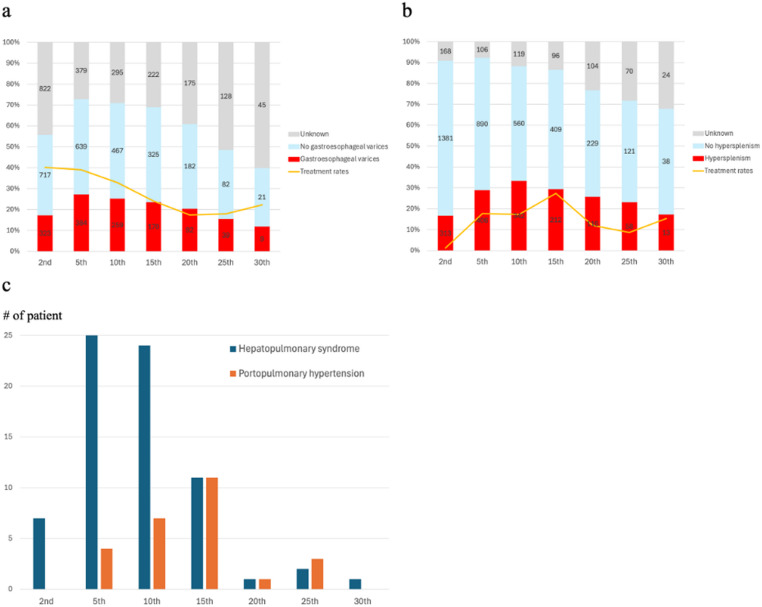
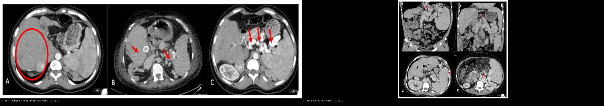
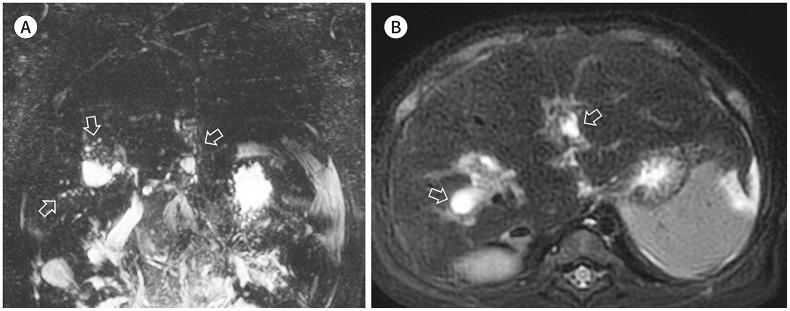
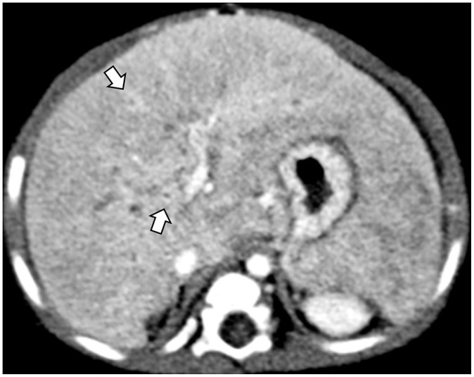
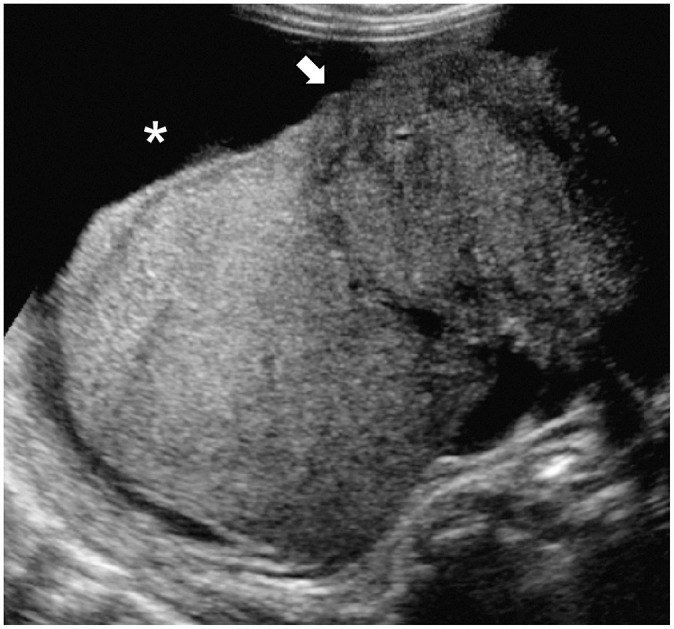
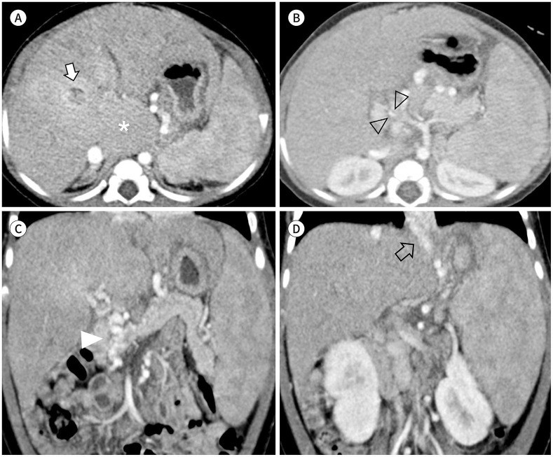
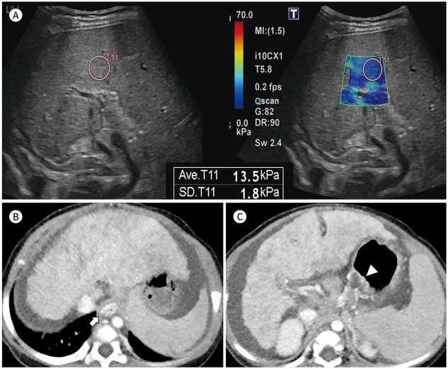
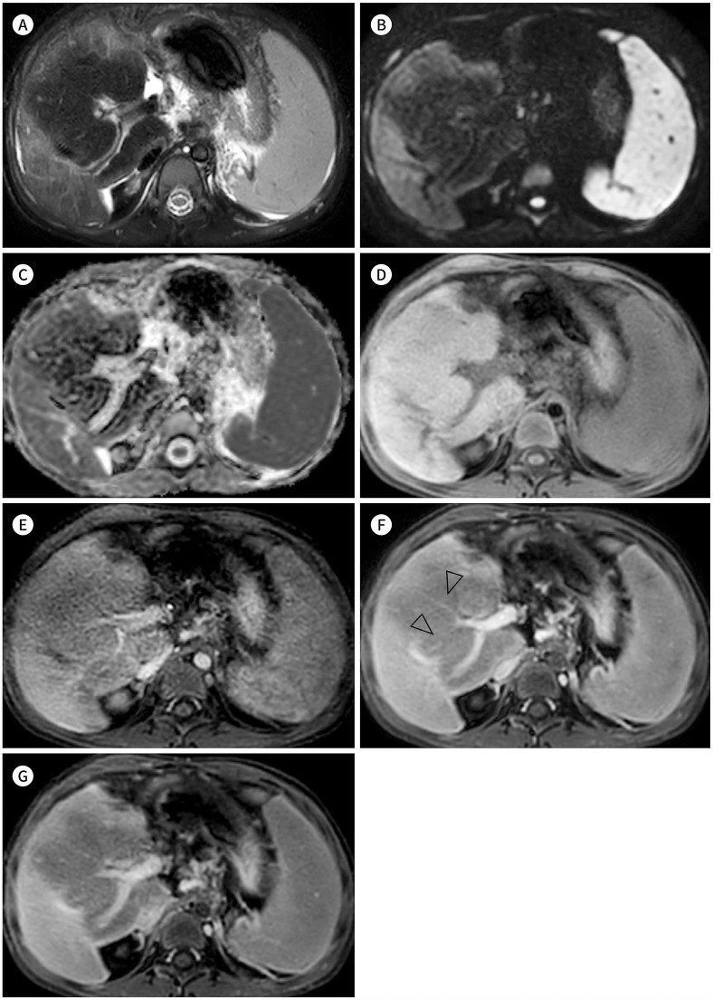
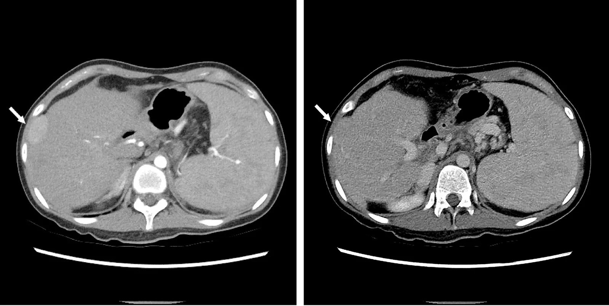
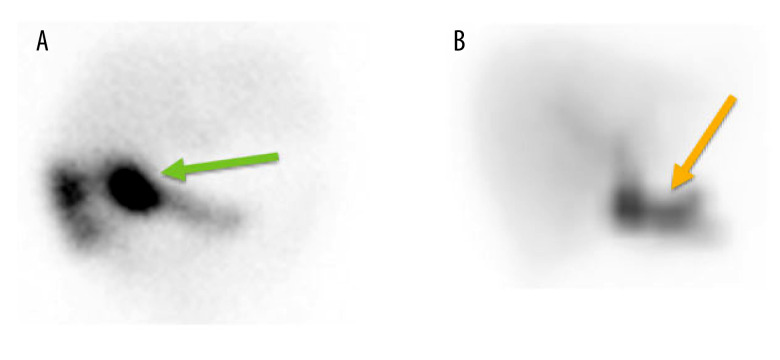

641 — Theo dõi hậu phẫu Kasai ở teo đường mật: viêm đường mật, tăng áp lực cửa & nốt gan (HCC) / Post-Kasai follow-up in biliary atresia
Tags: pattern:xo-gan-mat pattern:viem-duong-mat pattern:tang-ap-luc-cua vung:gan score:PELD protocol:MRI-MRCP-gan protocol:FIB-4-APRI
Mức chắc mắn (certainty): tổng hợp y văn (literature synthesis) — nhóm tự biên từ y văn mở (JKSR 2022, Pediatr Surg Int 2025–2026, JPGN 2025–2026, Hepatol Commun 2019, BMC Gastroenterol 2011, J Clin Med 2021) có số; các ca trong quiz là ca nguyên văn (verbatim case) chép đúng tuổi – bối cảnh – chú thích gốc (Hwang/JKSR, Park/Pediatr Surg Int, Chong/Am J Case Rep, Cortes-Cerisuelo/J Clin Med).
1. Tổng quan bệnh học – cơ chế hình ảnh
Teo đường mật (biliary atresia, BA) là bệnh tắc nghẽn–xơ hóa đường mật tiến triển ở trẻ nhũ nhi. Kasai portoenterostomy (HPE) là phẫu thuật đầu tay; mục tiêu là tái lập dòng mật (clearance of jaundice, COJ — bilirubin < 20 µmol/L trong 6 tháng đầu, hoặc < 2 mg/dL trong 3 tháng). Ngay cả khi thành công, bệnh vẫn tiến triển: tái lập dòng mật đạt 60–90%, nhưng tới 75% tiến triển xơ gan và ~50% cần ghép gan trước tuổi trưởng thành (Okubo 2025). Vì vậy "Kasai không phải là chữa khỏi, mà là mua thời gian" — theo dõi hậu phẫu là một lĩnh vực CĐHA riêng.
Ba trục biến chứng cần theo dõi: (1) viêm đường mật (cholangitis) & tắc quai mật; (2) tăng áp lực cửa (portal hypertension, PH) — giãn tĩnh mạch, lách to quá mức, giảm tiểu cầu; (3) nốt gan (tái sinh vs loạn sản/HCC). Mọi trẻ sau Kasai cần trả lời 3 câu mỗi lần khám: còn dẫn lưu mật không? đã tăng áp cửa chưa? có nốt gan mới không?
- TẠI SAO viêm đường mật thấy được trên hình ảnh: ứ mật + trào ngược ruột qua quai Roux → nhiễm khuẩn đường mật; hình ảnh giãn ống mật trong gan hình "chuỗi hạt" trên MRCP/T2, vi nang trong gan (bile lakes) đầy thuốc viền thì muộn trên CT, và dẫn lưu mật kém trên xạ hình HIDA (thuốc giữ lại lâu). Viêm đường mật tái diễn làm nặng xơ gan nhanh.
- TẠI SAO tăng áp lực cửa thấy trên hình ảnh: xơ gan mật → tăng áp tĩnh mạch cửa → lách to, giãn tĩnh mạch thực quản/dạ dày, tuần hoàn bàng hệ (quanh thực quản, lách–thận, sau phúc mạc), tĩnh mạch cửa nhỏ và có thể đảo dòng trên Doppler; gan phì đại thùy đuôi (caudate) bù trừ. PH gặp 46,4% toàn bộ BN và 49,8% số người sống với gan tự nhiên 20 năm; giãn tĩnh mạch thực quản–dạ dày (GEV) 35–43%, lách to quá mức (hypersplenism) 36,8–39,3% (Okubo 2025).
- Định nghĩa PH tối thiểu: giãn tĩnh mạch độ ≥ 2 trên nội soi VÀ/HOẶC tiểu cầu < 150 × 10⁹/L kèm lách to (chiều dài lách ≥ 2 z-score theo tuổi/giới trên siêu âm).
- TẠI SAO có nốt gan: xơ gan mật tạo nốt tái sinh (regenerative) lành tính; nhưng ở BA nốt loạn sản (dysplastic) và HCC có thể xuất hiện SỚM, kể cả dưới 1 tuổi (khác HCC trẻ thường gặp 10–14 tuổi). Trong nhóm sống với gan tự nhiên, 24% (23/96) phát triển nốt gan, trong đó 17,4% là loạn sản/HCC sớm, 39,1% tái sinh; khoảng cách từ Kasai đến khi phát hiện nốt trung vị 12,8 năm. Mổ ghép: 43% mảnh ghép có nốt, ~1/4 là tiền ác/ác, phần lớn KHÔNG thấy trên hình ảnh/AFP trước mổ → không được bỏ qua. HCC ở BA có hình ảnh giống người lớn: ngấm mạnh thì động mạch + thải thuốc (washout) thì cửa/muộn.
- Định lượng chức năng gan & tiên lượng (quantitative): sau COJ, tới 51% xơ gan (Metavir F4) và 54% tăng áp cửa (Hukkinen 2019, theo dõi trung vị 8,3 năm); bile acid máu tại 3 tháng > 150 µmol/L (hoặc bilirubin > 18,5 µmol/L) → nguy cơ ghép/tử vong gấp 7–8 lần; ở trẻ đã COJ, bile acid > 119 µmol/L → 12 lần; tại 6 tháng, bile acid > 78 µmol/L → nguy cơ PH gấp 4 lần (bilirubin > 8,5 µmol/L → 13 lần) (Anderson 2025).
2. Mẫu hình + chẩn đoán phân biệt theo cơ chế – vị trí (Gamut)
Gamut theo CƠ QUAN (đúng thứ tự đọc phim sau Kasai):
- Đường mật: viêm đường mật (cholangitis) → giãn ống "chuỗi hạt", hồ mật; tắc ống mật của quai Roux (biliary limb obstruction) → ứ thuốc trên HIDA; hẹp miệng nối.
- Gan (mô xơ): xơ gan mật (biliary cirrhosis) → bờ gan lởm chởm, tăng echo/không đồng nhất; phì đại thùy đuôi; sau cùng là suy gan.
- Tăng áp lực cửa: giãn tĩnh mạch thực quản/dạ dày, lách to, tuần hoàn bàng hệ (left gastric varix, shunt lách–thận, varices quanh lách/sau phúc mạc), đảo dòng tĩnh mạch cửa, báng; biến chứng: hội chứng gan–phổi (HPS), tăng áp phổi do cửa (PoPH).
- Nốt gan: tái sinh (lành), u hạt vôi hóa (lành), nốt loạn sản (dysplastic)/HCC sớm (ác), hiếm: hepatoblastoma, cholangiocarcinoma.
- Sau ghép gan: huyết khối động mạch gan (HAT), hẹp tĩnh mạch cửa, tắc dòng ra tĩnh mạch gan, PTLD.
Gamut theo MẪU HÌNH (cùng gan, khác bản chất):
- Nốt tái sinh: thường T2 tối, KHÔNG ngấm thuốc, có mạch cửa xuyên qua nốt; kích thước 0,6–13 cm.
- Nốt loạn sản/HCC: ngấm thì động mạch + thải thuốc thì cửa/muộn, có khi hạ tín hiệu T1; AFP có thể bình thường ở nốt loạn sản.
- U hạt vôi hóa: nốt vôi hóa nhỏ (17,4% nhóm nốt) — lành tính.

Biểu đồ thời điểm khởi phát tăng áp lực cửa (đăng ký teo đường mật Nhật Bản, JBAR): giãn tĩnh mạch thực quản–dạ dày đỉnh ở năm thứ 5, lách to quá mức đỉnh ở năm thứ 10 (HPS đỉnh năm 5, PoPH năm 15). Nguồn: Okubo R et al., Pediatr Surg Int 2025 (PMC12578773), Fig. 2, CC BY 4.0.
Trái: CT — phì đại gan trung tâm (vòng đỏ), phình mạch lách vôi hóa (mũi tên đỏ). Phải: CT các shunt cửa–chủ (A: giãn tĩnh mạch vành vị; B: shunt lách–thận; C: varices quanh lách; D: varices sau phúc mạc). Nguồn: Cortes-Cerisuelo M et al., J Clin Med 2021 (PMC8584637), CC BY 4.0. Ảnh ghép letterbox, giữ tỉ lệ.3. Bảng so sánh phân biệt (ma trận đối chiếu)
| Thực thể (entity) | Hình ảnh điển hình | Chốt vào (rule-in) | Chốt loại (rule-out) | Gợi ý xác nhận |
|---|---|---|---|---|
| Viêm đường mật sau Kasai | MRCP/T2: giãn ống trong gan "chuỗi hạt"; CT: vi nang trong gan ngấm viền (bile lakes) | Sốt + bilirubin tăng so nền + phân bạc màu, kèm giãn ống/vi nang | Không có bối cảnh sốt/ứ mật → ít khả năng | Lâm sàng + siêu âm; điều trị kháng sinh TM 2–3 tuần |
| Tắc ống mật quai Roux | Xạ hình HIDA: thuốc giữ lại lâu, không/thoát kém | Ứ thuốc trên HIDA + không dẫn lưu | HIDA thoát tốt → loại | HIDA; đối chiếu siêu âm/mổ |
| Xơ gan mật (biliary cirrhosis) | Siêu âm: echo không đồng nhất + bờ gan lởm chởm + phì đại thùy đuôi; báng | Bờ gan nốt + lách to + giảm tiểu cầu | Gan nhu mô đều, bờ nhẵn → chưa xơ | Siêu âm + elastography + APRI |
| Tăng áp lực cửa | CT/MRI: giãn TM thực quản/dạ dày, lách to, tuần hoàn bàng hệ; Doppler: đảo dòng TM cửa | Varices + lách to + tiểu cầu < 150 × 10⁹/L | Tiểu cầu bình thường + không varices → PH ít khả năng | Nội soi tiêu hóa trên + Doppler + elastography |
| Nốt tái sinh (lành) | MRI: T2 tối, KHÔNG ngấm, có mạch cửa xuyên nốt, 0,6–13 cm | Không ngấm + mạch cửa xuyên qua | Ngấm ĐM + thải thuốc → nghi loạn sản/HCC | MRI động ± mô bệnh; theo dõi kích thước |
| Nốt loạn sản / HCC | MRI động: ngấm mạnh thì ĐM + thải thuốc thì cửa/muộn, hạ tín hiệu T1 | Washout điển hình + ngấm ĐM ở gan xơ | T2 tối không ngấm + mạch xuyên → tái sinh | MRI động, AFP (có thể bình thường), sinh thiết nếu mơ hồ |
| Biến chứng sau ghép | Doppler: HAT (mất tín hiệu ĐM gan), hẹp TM cửa tại miệng nối, tắc dòng ra TM gan | Mất/đảo dòng mạch ghép sau ghép | Dòng bình thường → loại | Siêu âm Doppler (± CTA/MRA) |
Bảng xét nghiệm không xâm lấn dự đoán xơ gan / tăng áp cửa:
| Chỉ số | Ngưỡng | Hiệu năng | Ghi chú |
|---|---|---|---|
| Transient elastography (TE) | 12,7 kPa (giãn TM) | Se 84% / Sp 77% | Cắt 19,9 kPa dự đoán biến chứng (JKSR 2022) |
| Liver stiffness (LS) | 16,9 kPa (PH); > 24 kPa (nhóm lớn tuổi, xơ) | AUROC 0,91–0,96 | Hukkinen 2019 |
| APRI | 0,70 (PH); 1,92 (giãn TM) | AUROC 0,92; Se/Sp 84/83% | Tăng tiểu cầu giả → cẩn thận |
| Lách to trên siêu âm | ≥ 2 z-score | Se 92% / Sp 85% (giãn TM) | Không đặc hiệu riêng PH |
| Bile acid máu | > 150 µmol/L (3 tháng); > 78 µmol/L (6 tháng) | Nguy cơ ghép/tử vong 7–8×; PH 4× | Anderson 2025 |
Dấu hiệu "đọc chuẩn xác"
- Vi nang trong gan (bile lakes) ngấm viền thì muộn là dấu của viêm đường mật — nhưng nang mật cũng gặp ở xơ gan mật không nhiễm trùng; phải ghép với sốt + bilirubin tăng.
- Nốt tái sinh có thể ngấm nhẹ → khó phân biệt HCC; khi nghi, dùng MRI động và mô bệnh.
- AFP KHÔNG đủ loại trừ nốt loạn sản (Park 2026: AFP nốt loạn sản ~2,0 ng/mL, tương tự nốt lành).
4. Protocol chụp + hệ phân độ/điểm chuẩn hóa
- Siêu âm bụng (đầu tay, không tia): kích thước gan/lách, bờ gan, echo nhu mô, ứ mật, tuần hoàn bàng hệ; Doppler tĩnh mạch cửa–gan (đảo dòng, đường kính). Siêu âm đàn hồi (2D-SWE/TE): xơ gan ~2D-SWE 11,5 kPa / TE 10,5 kPa, biến chứng TE 19,9 kPa.
- Xét nghiệm máu theo dõi: bilirubin, GGT, AST/ALT, albumin, tiểu cầu, APRI, bile acid, M2BPGi, AFP (kèm siêu âm).
- Nội soi tiêu hóa trên: hằng năm bắt đầu từ 12 tháng tuổi (hoặc khi nghi chảy máu) để phát hiện giãn tĩnh mạch; giãn độ ≥ 2 → diệt tĩnh mạch bằng chích xơ/thắt vòng (EVL) hoặc chẹn beta.
- MRI gan + MRCP: khi nghi viêm đường mật/tắc mật, hoặc phát hiện/đặc trưng nốt gan (nốt tái sinh vs loạn sản/HCC bằng MRI động); không tia, dùng theo dõi lâu dài.
- CT: hạn chế ở trẻ (ALARA), dùng khi cần bản đồ mạch/tăng áp cửa phức tạp (CTA) hoặc trước ghép.
- Phân loại & chỉ định ghép gan: dùng PELD và các chỉ định — thất bại Kasai sớm: không dẫn lưu mật + bilirubin > 6 mg/dL sau 3 tháng; xơ gan/tăng áp cửa có biến chứng (chảy máu, báng, HPS/PoPH), viêm đường mật kháng trị, suy dinh dưỡng/chậm tăng trưởng.
- Theo dõi nốt gan (chuẩn hóa): siêu âm + AFP định kỳ; nốt mới/đổi tính chất → MRI động; nốt ngấm ĐM + thải thuốc hoặc to lên → sinh thiết/mổ (không tin AFP bình thường).
flowchart TD
A["Tre sau Kasai (HPE): theo doi dinh ky"] --> B["Bilirubin / GGT / tieu cau / AFP + sieu am + Doppler"]
B --> C{"Con dan luu mat? (bilirubin < 20 umol/L)"}
C -->|Khong, bi > 6 mg/dL sau 3 thang| D["That bai Kasai som -> xet GHEP GAN (PELD)"]
C -->|Co| E{"Sot + bilirubin tang + phan bac mau?"}
E -->|Co| F["Viem duong mat -> sieu am/MRCP (chuoi hat, bile lake) + KS tinh mach"]
E -->|Khong| G{"Dau hieu tang ap luc cua?"}
G -->|Co| H["Noi soi hang nam: varices do >=2 -> EVL/beta-block"]
G -->|Khong| I["Theo doi tiep"]
B --> J{"Not gan moi / AFP tang?"}
J -->|Co| K["MRI dong: ngam DM + thai thuoc = loan san/HCC; T2 toi + mach xuyen = tai sinh"]
K --> L{"Ngam DM + thai thuoc hoac to len?"}
L -->|Co| M["Sinh thiet / mo (khong tin AFP binh thuong)"]
L -->|Khong| N["Theo doi 6-12 thang"]
F --> O{"Ha nang tai phat?"}
O -->|Co, khang tri| D
H --> D
5. Biến thể bình thường và cạm bẫy
- Viêm đường mật là chẩn đoán LÂM SÀNG, không chỉ hình ảnh: sốt + bilirubin tăng so nền (± phân bạc màu), đáp ứng kháng sinh TM. Hình ảnh có thể bình thường trong đợt sớm → đừng loại trừ vì siêu âm sạch.
- Nốt tái sinh vs loạn sản/HCC: nốt tái sinh có thể ngấm nhẹ và rất lớn (tới 13 cm); ngược lại nốt loạn sản có thể AFP bình thường → chỉ MRI động + mô bệnh mới phân định.
- HCC ở BA có thể xuất hiện < 1 tuổi — khác HCC trẻ điển hình 10–14 tuổi; không loại trừ theo tuổi.
- Elastography bị nhiễu bởi ứ mật/báng/viêm gan cấp → đọc cùng bối cảnh, không đọc đơn độc.
- Đảo dòng tĩnh mạch cửa / tĩnh mạch cửa nhỏ dễ bị bỏ sót khi siêu âm vội → phải ghi nhận hướng dòng bằng Doppler.
- Sau ghép gan: các biến chứng HAT, hẹp TM cửa, tắc dòng ra TM gan thường biểu hiện bằng bất thường Doppler, có thể trước khi có triệu chứng — theo dõi Doppler định kỳ sớm sau ghép.
- Cạm bẫy mặt cắt: "vi nang trong gan" ở trẻ Kasai có thể bị nhầm áp-xe/kén khí; phân biệt bằng bối cảnh nhiễm trùng và ngấm viền thì muộn.
6. Tự lượng giá — Blind Quiz (ảnh trơn ngoài, đáp án ẩn trong khối chi tiết)
Ca 1 — Bé trai 5 tháng tuổi sốt sau Kasai portoenterostomy; MRCP bụng. Mô tả đường mật trong gan trước khi mở đáp án.

- Gợi ý lâm sàng: sốt, nghi viêm đường mật sau Kasai.
- Câu hỏi: Dấu hiệu đường mật? Vì sao tăng áp lực nội ống? Chẩn đoán và điều trị đầu tay?
Bấm để hiện đáp án (findings + chẩn đoán)
- Dấu hiệu: (A) giãn ống mật trong gan dạng "chuỗi hạt" (beaded dilatation); (B) nhiều nang nhỏ trong gan = viêm đường mật sau Kasai.
- Chẩn đoán: viêm đường mật sau Kasai — cần kháng sinh tĩnh mạch 2–3 tuần để bảo tồn gan tự nhiên. Nguy cơ chính là viêm đường mật tái diễn làm nặng xơ gan.
- Nguồn ảnh: Hwang J et al., J Korean Soc Radiol 2022 (PMC9574285), Fig. 2, CC BY-NC 4.0 (giữ nguyên bản).
Ca 2 — Bé trai 7 tháng tuổi sốt sau Kasai; CT cản quang bụng. Dấu hiệu nào chỉ viêm đường mật?

- Gợi ý lâm sàng: đợt viêm đường mật cấp sau Kasai.
- Câu hỏi: Mô tả tổn thương gan? Vì sao là "hồ mật"? Phân biệt áp-xe?
Bấm để hiện đáp án (findings + chẩn đoán)
- Dấu hiệu: CT cản quang — nhiều vi nang nhỏ trong gan ở phần trung tâm (mũi tên), một số ngấm viền thì muộn; nhu mô gan ngấm không đồng nhất = xơ gan mật + hồ mật (bile lakes).
- Chẩn đoán: viêm đường mật cấp sau Kasai. "Hồ mật" = ổ mật nhỏ, ngấm viền thì muộn; phân biệt áp-xe (ngấm viền + dịch + sốt nặng) nhưng ở BA thường là viêm đường mật lành hóa bằng kháng sinh, không dẫn lưu.
- Nguồn ảnh: Hwang J et al., J Korean Soc Radiol 2022 (PMC9574285), Fig. 3, CC BY-NC 4.0 (giữ nguyên bản).
Ca 3 — Bé gái 9 tháng tuổi xơ gan mật sau Kasai; siêu âm gan. Mô tả nhu mô và bờ gan.

- Gợi ý lâm sàng: theo dõi hậu Kasai, bụng to.
- Câu hỏi: Bờ gan (mũi tên)? Nhu mô? Dấu sao chỉ gì?
Bấm để hiện đáp án (findings + chẩn đoán)
- Dấu hiệu: siêu âm — echo nhu mô không đồng nhất, bờ gan lởm chởm/nốt (mũi tên), báng màng bụng (perihepatic ascites) (dấu sao) = xơ gan mật (biliary cirrhosis).
- Chẩn đoán: xơ gan mật sau Kasai; theo dấu bờ gan + lách to + giảm tiểu cầu để tiên lượng PH và chỉ định ghép.
- Nguồn ảnh: Hwang J et al., J Korean Soc Radiol 2022 (PMC9574285), Fig. 4, CC BY-NC 4.0 (giữ nguyên bản).
Ca 4 — Bé trai 9 tháng tuổi tăng áp lực cửa sau Kasai; CT bụng có cản quang (A–D). Tìm dấu hiệu tăng áp lực cửa.

- Gợi ý lâm sàng: gan xơ mật, nghi biến chứng tăng áp lực cửa.
- Câu hỏi: Ba dấu hiệu ở gan/lách/varices? Biến chứng nguy hiểm nhất?
Bấm để hiện đáp án (findings + chẩn đoán)
- Dấu hiệu: CT — gan phì đại dạng nốt (globular) với phì đại thùy đuôi, lách to, giãn tĩnh mạch thực quản/dạ dày + tuần hoàn bàng hệ = tăng áp lực cửa do xơ gan mật.
- Chẩn đoán: tăng áp lực cửa sau Kasai; biến chứng nguy hiểm nhất là chảy máu do vỡ tĩnh mạch thực quản (variceal hemorrhage) → cần nội soi và can thiệp (EVL/chẹn beta).
- Nguồn ảnh: Hwang J et al., J Korean Soc Radiol 2022 (PMC9574285), Fig. 6, CC BY-NC 4.0 (giữ nguyên bản).
Ca 5 — Bé gái 2 tháng tuổi sau Kasai; siêu âm đàn hồi gan (A) + CT 8 tháng sau (B, C). Định lượng độ cứng gan và biến chứng.

- Gợi ý lâm sàng: theo dõi hậu Kasai sớm.
- Câu hỏi: Độ cứng gan bao nhiêu kPa? Ngưỡng dự báo biến chứng? CT 8 tháng sau cho thấy gì?
Bấm để hiện đáp án (findings + chẩn đoán)
- Dấu hiệu: SWE — độ cứng gan ~13,5 kPa (trung vị 12,1 kPa) = tăng; CT 8 tháng sau — nhu mô ngấm không đồng nhất + bờ gan nốt + giãn tĩnh mạch thực quản (mũi tên) và dạ dày (đầu mũi tên) → tiến triển xơ gan/tăng áp lực cửa, sau đó phải ghép gan.
- Chẩn đoán: xơ gan mật tiến triển với tăng áp lực cửa. Ngưỡng đáng nhớ: TE ~12,7 kPa (giãn tĩnh mạch), TE ~19,9 kPa (biến chứng), 2D-SWE ~11,5 kPa (xơ gan).
- Nguồn ảnh: Hwang J et al., J Korean Soc Radiol 2022 (PMC9574285), Fig. 8, CC BY-NC 4.0 (giữ nguyên bản).
Ca 6 — Bé gái 4 tuổi sau Kasai; MRI gan. Nốt gan này lành hay ác?

- Gợi ý lâm sàng: theo dõi dài hạn sau Kasai, phát hiện "khối" gan.
- Câu hỏi: Tín hiệu nốt trên T2/T1? Có ngấm không? Dấu hiệu giúp phân biệt với HCC?
Bấm để hiện đáp án (findings + chẩn đoán)
- Dấu hiệu: MRI đa chuỗi — nốt lớn, hạ tín hiệu T2, KHÔNG ngấm thuốc, có mạch cửa xuyên qua nốt = nốt tái sinh khổng lồ (giant regenerative nodule).
- Chẩn đoán: nốt tái sinh (lành). Phân biệt HCC: ngấm mạnh thì động mạch + thải thuốc thì cửa/muộn (khác nốt tái sinh không ngấm). Nốt tái sinh có thể tới 13 cm nhưng vẫn lành.
- Nguồn ảnh: Hwang J et al., J Korean Soc Radiol 2022 (PMC9574285), Fig. 11, CC BY-NC 4.0 (giữ nguyên bản).
Ca 7 — Bệnh nhi BA sống với gan tự nhiên, phát hiện nốt gan; MRI động thì động mạch (trái) và thì cửa (phải). Nguy cơ gì?

- Gợi ý lâm sàng: tầm soát nốt gan ở BA sống với gan tự nhiên (ca nguyên văn).
- Câu hỏi: Nốt ngấm thì nào? Có thải thuốc không? Vì sao AFP bình thường vẫn đáng lo?
Bấm để hiện đáp án (findings + chẩn đoán)
- Dấu hiệu: nốt ngấm mạnh thì động mạch (trái) và KHÔNG thải thuốc ở thì cửa (phải) (mũi tên) = nốt loạn sản/ung thư biểu mô tế bào gan sớm ở BA sống với gan tự nhiên.
- Chẩn đoán: nốt loạn sản (dysplastic nodule) — có ca tiến triển thành HCC sớm. Lưu ý: AFP nốt loạn sản có thể bình thường (~2,0 ng/mL), và 43% mảnh ghép BA có nốt, 1/4 là tiền ác/ác, phần lớn bị bỏ sót trên hình ảnh/AFP → phải MRI động + sinh thiết khi nghi.
- Nguồn ảnh: Park JYJ et al., Pediatr Surg Int 2026 (PMC13597636), Fig. 5, CC BY 4.0.
Ca 8 — Bé sau Kasai, sốt và tăng bilirubin; xạ hình gan–mật HIDA (A, B). Chẩn đoán?

- Gợi ý lâm sàng: không dẫn lưu mật tốt sau Kasai, nghi tắc quai mật.
- Câu hỏi: Thuốc phóng xạ giữ lại ở đâu? Cơ chế gây tắc?
Bấm để hiện đáp án (findings + chẩn đoán)
- Dấu hiệu: HIDA — thuốc phóng xạ giữ lại lâu (persistent tracer retention) (mũi tên) = dẫn lưu mật kém/ứ.
- Chẩn đoán: tắc ống mật của quai Roux (biliary limb obstruction) sau Kasai — do dính quanh miệng nối làm cản trở làm sạch quai mật; cần xử trí phẫu thuật/dẫn lưu. HIDA là chìa khóa khi siêu âm không rõ.
- Nguồn ảnh: Chong CHQ et al., Am J Case Rep 2026 (PMC13235415), Fig. 2, CC BY-NC-ND 4.0 (giữ nguyên bản).
Ca 9 — Ghép đối chiếu: CT tăng áp lực cửa ở BA sau Kasai (trung tâm phì đại vs shunt cửa–chủ). Kể tên các dấu hiệu.
Bấm để hiện đáp án (findings + chẩn đoán)
- Trái: CT — phì đại gan trung tâm (bù trừ) + phình mạch lách vôi hóa (biến chứng mạch của tăng áp cửa/xơ gan).
- Phải: CT — shunt cửa–chủ: A giãn tĩnh mạch vành vị (left gastric varix), B shunt lách–thận, C varices quanh lách, D varices sau phúc mạc.
- Kết luận: các shunt/tuần hoàn bàng hệ này là dấu hiệu tăng áp lực cửa ở BA sống lâu với gan tự nhiên (ca người lớn, sau ghép gan).
- Nguồn ảnh: Cortes-Cerisuelo M et al., J Clin Med 2021 (PMC8584637), Fig. 1 và Fig. 2, CC BY 4.0. Ảnh ghép letterbox.
Bài liên quan chéo
- 600 – Tổng quan Hệ Nhi khoa
- 625 – Vàng da tắc mật sơ sinh: teo đường mật vs viêm gan (nang ống mật chủ)
- 626 – Viêm tụy cấp ở trẻ (Atlanta nhi)
- 121 – LI-RADS & HCC (đọc nốt gan trên MRI động)
- 125 – Gan mỡ–xơ (đàn hồi/PDFF) (định lượng xơ hóa)
- 130 – Túi mật, 131 – Tắc mật
Ảnh
- Tên file:
641_kasai-hau-phau_Modality_SourceID.jpg. Nguồn + giấy phép từng ảnh:images/CREDITS.mdvàsources.md. - Ảnh CC BY 4.0 dùng cho ảnh ghép; ảnh CC BY-NC / CC BY-NC-ND giữ nguyên bản, không crop/ghép.
Không dùng để chẩn đoán độc lập khi chưa có người hướng dẫn.